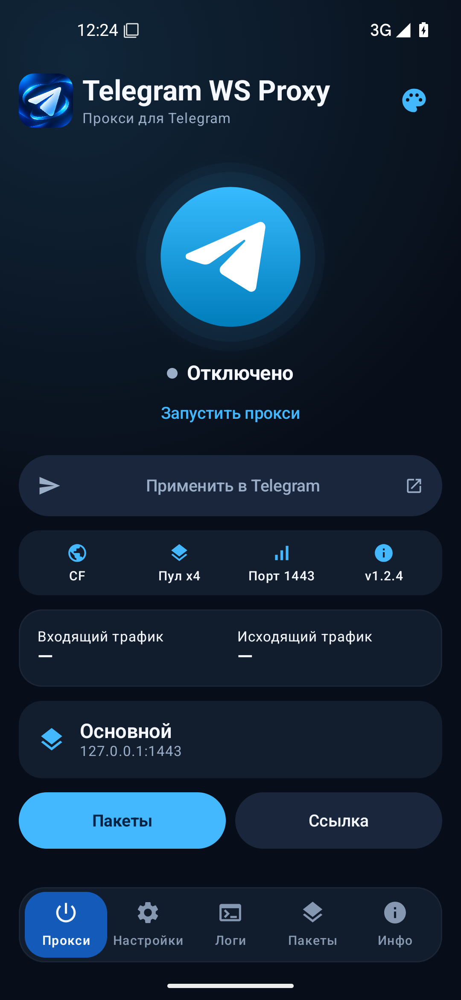
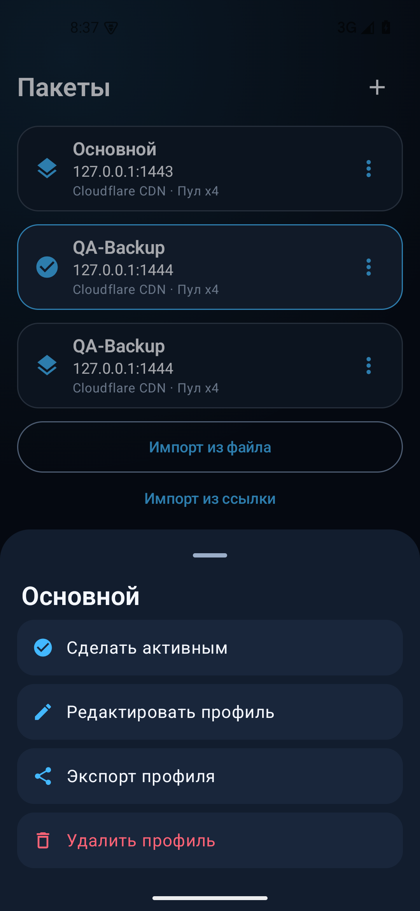

Прокси для Telegram
Запустите локальный MTProto-прокси на Android и перенесите настройки в Telegram одним нажатием.

Что изменилось
в v1.2.4
- Telegram снова подключается
- Mezets адаптировал исправление резервного TCP-подключения из десктопной версии Flowseal v1.12.0. Теперь прокси выполняет по одной попытке к каждому адресу и увеличивает паузу после неудачных подключений. В проверке Mezets Telegram снова работал через Android-прокси. Релиз Flowseal v1.12.0
- Главный экран
- Статус, счётчики трафика и активный профиль видны рядом с кнопкой запуска. Когда прокси работает, от круглого значка Telegram расходятся волны.
- Локальный адрес IPv4
- В поле адреса доступны цифры и точки. Для сохранения нужен полный IPv4-адрес, например
127.0.0.1. - Пакеты настроек
- Профили открываются в отдельной вкладке перед «Инфо». Их можно импортировать из файла или ссылки, а при экспорте исключить секретный ключ.
- Темы и диагностика
- Редактор темы доступен с главного экрана. Логи можно фильтровать по уровню и сохранять с маскировкой чувствительных данных.

Как работал старый форк
Telegram передавал соединение локальному прокси, а Rust-движок определял дата-центр по данным начала сессии и выбирал маршрут.
Схема маршрута
- КлиентTelegram
- Прокси на телефоне127.0.0.1:1443
- МаршрутПрямой WSS
- НазначениеДата-центр Telegram
Rust-движок открывал защищённый WebSocket к инфраструктуре Telegram. Если подходящее соединение уже было в пуле, прокси мог взять его оттуда.
- Пул соединений
- Движок заранее открывал несколько WebSocket-соединений, чтобы при новом запросе использовать готовое. В архивной v1.2.3 размер пула по умолчанию был 4.
- Резервные маршруты
- При сбое прямого WebSocket движок мог попробовать настроенные маршруты через Cloudflare. Если они были недоступны и для этого дата-центра был известен адрес, оставался прямой TCP.
- Что было видно в логах
- Журнал помогал узнать номер дата-центра, понять, взято ли соединение из пула, и увидеть, когда прокси переключался на резервный маршрут.
От ПК к Android
Как появился Android-порт и откуда выросло обновление Mezets.
-
Десктоп
Flowseal
В оригинальном TG WS Proxy клиент Telegram подключался к локальному MTProto-прокси. Дальше соединение с дата-центром брал на себя прокси, используя защищённый WebSocket, когда маршрут был доступен.
Десктопный проект -
Android · v1.2.3
amurcanov
Android-порт запускал Rust-движок через Android-сервис с постоянным уведомлением. По умолчанию Telegram обращался к
127.0.0.1:1443, а кнопка «Применить в Telegram» передавала адрес, порт и секрет в мессенджер.В приложении уже были настройки Cloudflare и пула, ручная конфигурация дата-центров и журнал событий.
Исходный Android-порт -
Mezets
Владелец исходного Android-репозитория отправил его в архив . Когда старая сборка перестала подключаться у Mezets, он перенёс исправление из обновления Flowseal для ПК в Android-форк.
Что исправили в v1.2.4
Подключение к Telegram
- Установите APK. Universal включает сборки для 32- и 64-битных ARM-устройств.
- Откройте TG WS Proxy и нажмите круглую кнопку Telegram на главном экране.
- Выберите «Применить в Telegram» и подтвердите добавление прокси в мессенджере.